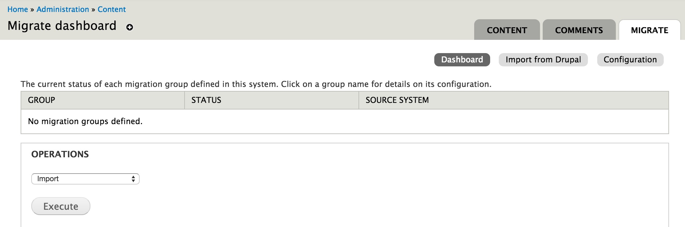
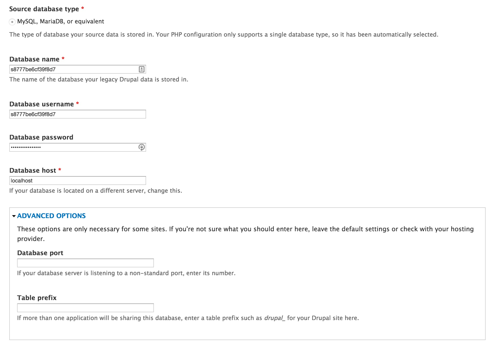
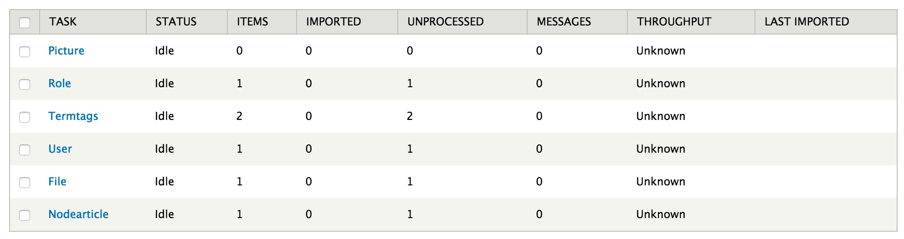
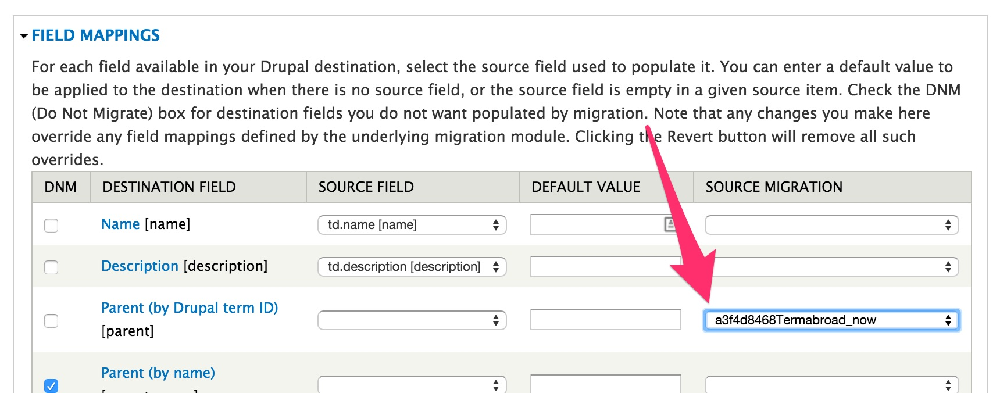
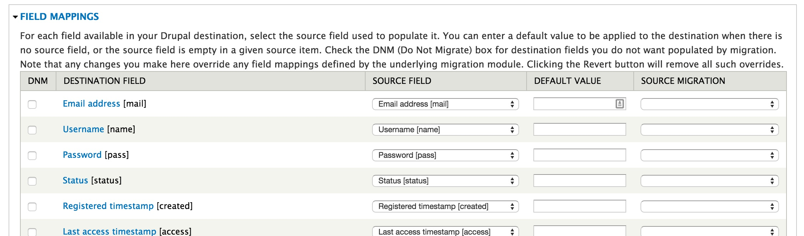
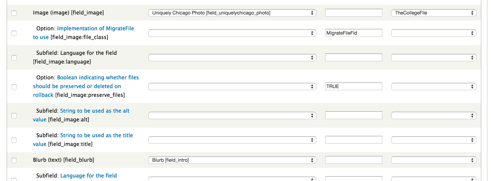
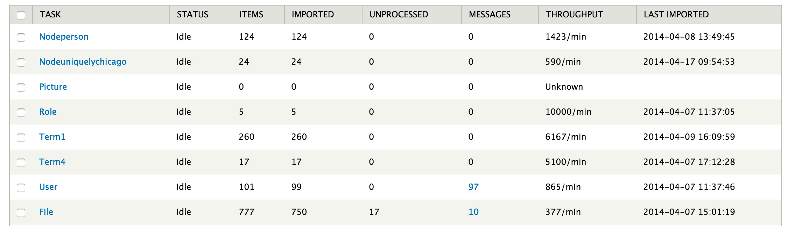
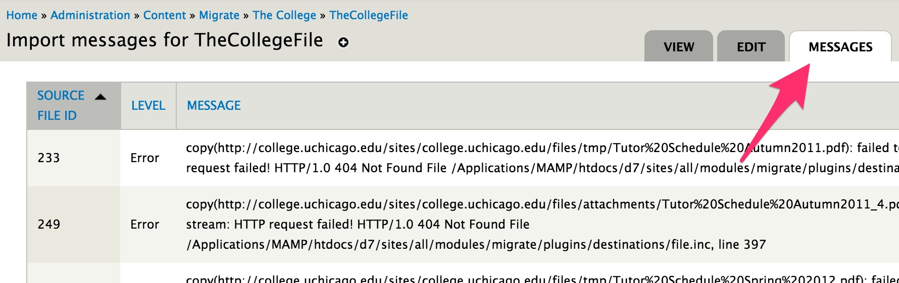
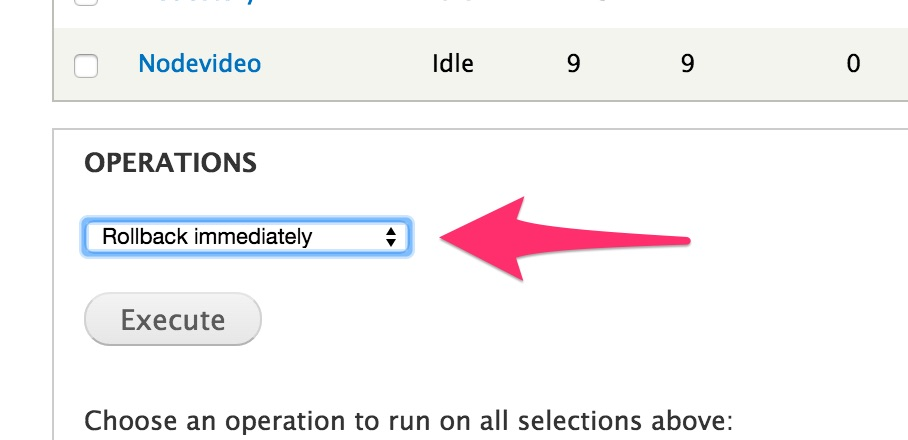

#MidCamp
Migration In Exactly 0 (zero) Lines Of Code /
Avi Schwab
Migration In Exactly 0 (zero) Lines Of Code
2015.midcamp.org/node/22
MidCamp 2015
#MidCamp #MigrateD2D
Avi Schwab
Twitter: @ajschwab
Web Project Manager, University of Chicago
drupal.org/u/froboy
Why Migrate? (Why not migrate?)
Drupal 6->7 migration
- Works well for many sites where you can just clone the db and roll.
- Might be a problem for high-content or high-complexity sites.
Migration with Migrate
- Gives the ability to import new content throughout the dev cycle.
- Allows easy refactoring of content.
- Enables migration from non-Drupal sites.
- Has full drush integration.
- Will prepare you for Drupal 8.
Prepare yourself
After you've gone through your usual planning, prototyping, and design processes...
Build out your nodes (or entities)
Make a rough field mapping from the old site to new
Install your modules
- Migrate: https://www.drupal.org/project/migrate
- Migrate d2d: https://www.drupal.org/project/migrate_d2d
Enable your modules
- Migrate (& UI)
- Drupal-to-Drupal migration (& UI)
Let's begin
From your Migrate dashboard (admin/content/migrate) click “Import from Drupal”
Enter your old db information
This could be cloned to a dev environment, or live (if you dare).
Step through initial migration steps
But don't worry, we're not committing anything just yet.
“Save Import Settings” but don’t run yet
We still have some more work to do.
Review your settings
Get your mappings
Click on each "Task" and then "Edit" to view the mappings
Each task has dependencies, but they’re in roughly the correct order:
- Pictures
- Roles
- Taxonomies
- Users
- Files
- Nodes
Pictures
Should be straightforward.
Roles
Should also be easy.
Taxonomies
Get the right source for the term parents.
Users
Maybe some text fields you've added? Set the mappings.
Files
Probably not much to change here.
Nodes
This might get tricky...
Eventually...
When at first you don't succeed...
Check the messages
Rollback and try again
Dig into the docs
https://www.drupal.org/node/1813498
Feeds to the rescue
- https://www.drupal.org/project/feeds
- https://www.drupal.org/project/feeds_tamper
Feeds pro tip: You can load data into Google Sheets and publish as CSV, then consume with Feeds URL. No more Excel saves & uploads!
http://stackoverflow.com/a/23394860